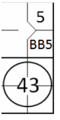
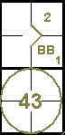

Comme nous l'avons vu pour les coups sûrs, si un coup sûr permet à un coureur d'avancer, même si le frappeur est retiré, l'avancement est enregistré en inscrivant le numéro du frappeur dans l'ordre de passage au bâton dans la case correspondant à la base atteinte. Ainsi, si, ( Exemple 29: ) Avec un coureur en première base, le frappeur (cinquième dans l'ordre de frappe) frappe vers la deuxième base, qui le retire en première base, permettant néanmoins au coureur d'atteindre la deuxième base, le chiffre cinq est écrit dans la case correspondante.
| WBSC | Transcription dans l'outil de scorage | Outil |
|---|---|---|
|
 |
/* Le premier batteur gagne la première base sur un 'base on ball' */ action { batter -> BB } /* Le batteur suivant frappe une balle vers le défenseur de la deuxième base, qui relai au défenseur de la première base pour faire le retrait. Le coureur avance d'une base */ action { batter -> 43 , runner1 -> + } |
 |